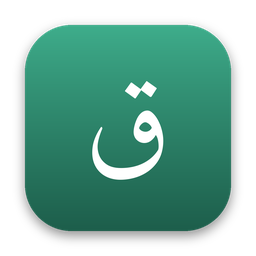
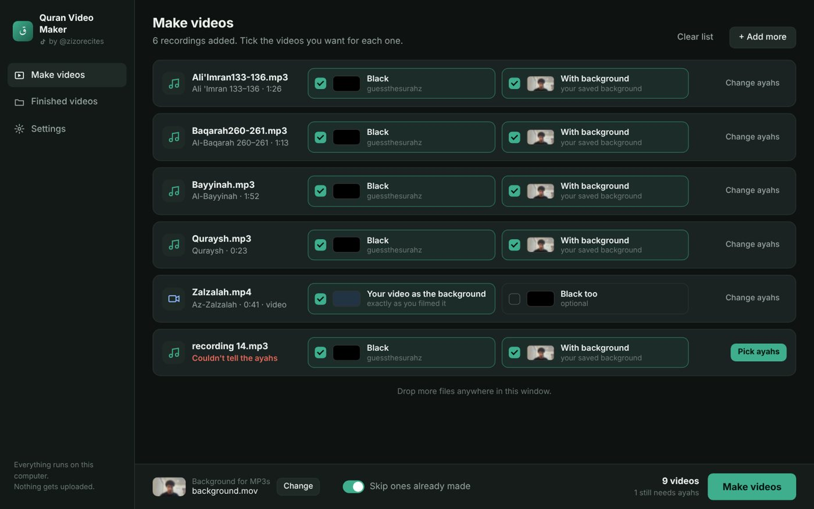
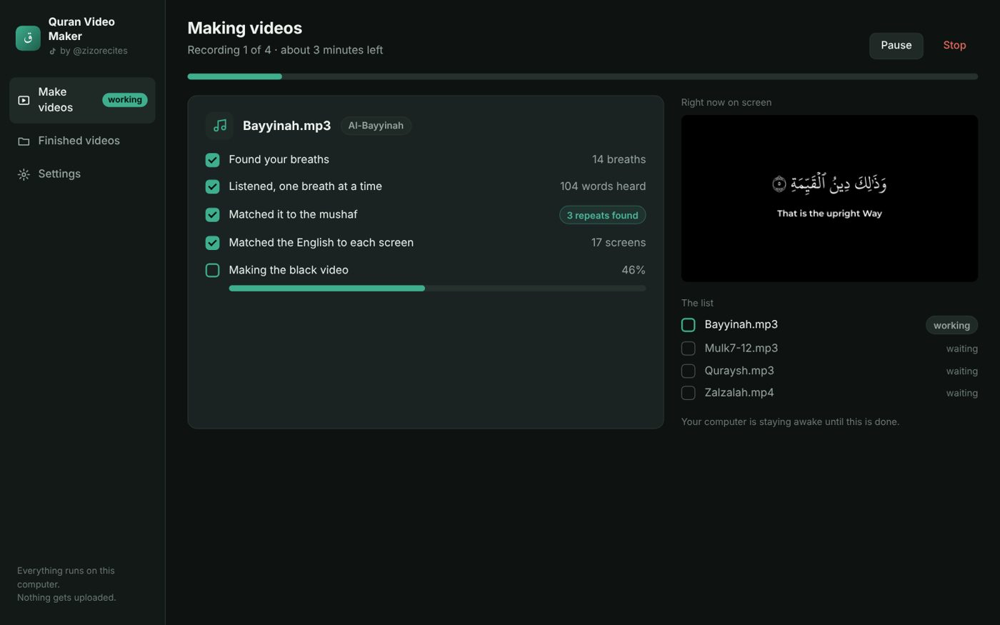
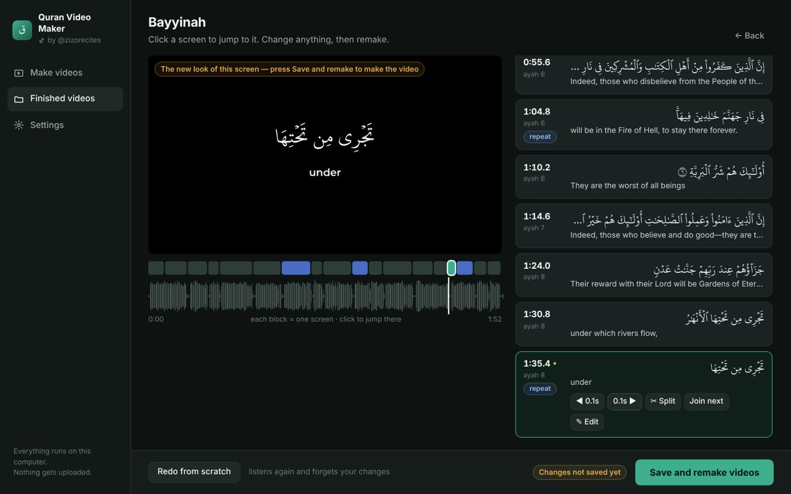
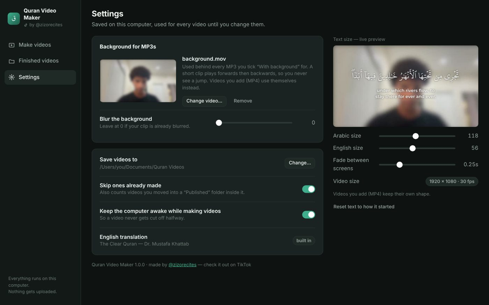

Turn your recitation into a video with the mushaf text and the English — a new screen every time you take a breath, showing exactly what you said.
by @zizorecites — check it out on TikTokFree. Everything runs on your own computer — nothing gets uploaded.




Tip: name your recordings like Mulk7-12.mp3 or Qadr.mp3 and the app knows the ayahs by itself.